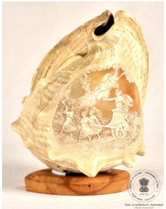

🔇 Is bhasha me is vastu ka audio abhi uplabdh nahi hai.
9. LXXVII - 99: शंख

9. LXXVII - 99
एक शंख जिस पर एक रथ में सवार स्त्री की नक्काशी की गई है। रथ के आगे तीन स्त्रियाँ और पीछे एक स्त्री हैं। रथ दो स्त्रियों द्वारा चलाया जा रहा है, आगे वाली स्त्री बिगुल बजा रही है और पीछे वाली स्त्री अपने दाएँ कंधे पर भाला थामे हुए है। यह दुर्लभ, उत्कृष्ट और बारीक नक्काशीदार बड़ा शंख इंग्लैंड में बनाया गया है। शंख हिंदू और बौद्ध दोनों धर्मों के अनुष्ठानों में एक महत्वपूर्ण प्रतीक माना जाता है। हिंदू परंपरा में शंख को या तो विष्णु का शंख (त्रंपेट) या अर्घ्य पात्र (जल अर्पण पात्र) माना जाता है। 11वीं शताब्दी के दौरान उत्तरी भारत में शंखों पर जटिल नक्काशी की परंपरा देखी जाती है। शंख को शक्ति, अधिकार और दैवीय संबंध का प्रतीक माना जाता है। यह शंख 20वीं शताब्दी का है।
9. LXXVII - 99: Conch
9. LXXVII - 99
A conch carved with a woman riding in a chariot. Three women stand before the chariot and one behind it. The chariot is driven by two women, the one in front blowing a bugle and the one behind holding a spear on her right shoulder. This rare, exquisite and finely carved large conch was made in England. The conch is regarded as an important symbol in the rituals of both Hinduism and Buddhism. In the Hindu tradition the conch is held to be either the trumpet of Vishnu or an arghya vessel (a vessel for offering water). During the 11th century a tradition of intricate carving on conches is seen in northern India. The conch is regarded as a symbol of power, authority and divine connection. This conch dates from the 20th century.
9 LXXVII - 99: శంఖం
9 LXXVII - 99
అద్భుతమైన ఈ అరుదైన కళాకృతి చేతితో చెక్కబడిన ఈ పెద్ద శంఖం (Conch) 20వ శతాబ్దానికి చెందిన ఇంగ్లాండ్ కళాఖండం. ఈ శంఖంపై ఒక మహిళ రథంలో కూర్చుని ఉన్న దృశ్యం చెక్కబడింది; రథం ముందు ముగ్గురు మహిళలు మరియు వెనుక ఒక మహిళ కనిపిస్తున్నారు. రథాన్ని ఇద్దరు మహిళలు నడుపుతున్నారు: ముందున్న అమ్మాయి బ్యూగుల్ను వాయిస్తుండగా, వెనుక ఉన్న అమ్మాయి తన కుడి భుజంపై ఒక ఈటెను పట్టుకుని ఉంది. శంఖం హిందూ మరియు బౌద్ధ ఆచారాలలో ఒక ముఖ్యమైన చిహ్నం. హిందూ ఆచారంలో శంఖాన్ని విష్ణువు యొక్క ట్రంపెట్గా లేదా అభిషేక పాత్రగా పరిగణిస్తారు, మరియు అధికారం, హోదా మరియు దైవిక అనుబంధానికి చిహ్నంగా భావిస్తారు.
9۔ایل ایکس ایکسVII-99: شنکھ
9۔ایل ایکس ایکسVII-99
یہ شنکھ نہایت خوبصورت اور نایاب دستی نقش و نگاری سے آراستہ ہے۔ اس نقش میں ایک رتھ گاڑیپر سوار ایک خاتون دکھائی گئی ہے جس کے سامنے تین خواتین اور پیچھے ایک خاتون ہیں اوررتھ کو دو خواتین چلا رہی ہیں ۔ سامنے والی لڑکی اپنے ہاتھ میں نرسنگا بجا رہی ہے، جبکہ پیچھے والی خاتون اپنے دائیں کندھے پر نیزہ تھامے ہوئی ہے۔یہ نایابخوبصورت اور تفصیلی نقش و نگاری والا بڑا شنکھ انگلینڈ میں تیار کیا گیا ہے۔شنکھ ہندو اور بدھ دونوں مذاہب میں ایک مقدس اور علامتی اہمیت رکھتا ہے۔ ہندو رسومات میں شنکھ کو یا تو وشنو کا نرسنگا یا تبرککا برتن سمجھا جاتا ہے۔شمالی ہندوستان میں گیارہویں صدی کے دوران شنخ پر باریک اور دیدہ زیب نقش و نگار کا رواج عام تھا۔شنکھ کو طاقت، اقتدار اور الوہی وابستگیکی علامت مانا جاتا ہے۔یہ نقش دار شنکھ بیسویں صدی میں تیار کیا گیا ہے۔
9. LXXVII - 99: শঙ্খ
9. LXXVII - 99
একটি শঙ্খ, যার উপর রথে আরোহী এক নারীর খোদাই করা হয়েছে। রথের সামনে তিনজন নারী এবং পিছনে একজন নারী রয়েছেন। রথটি দুজন নারী চালাচ্ছেন, সামনের নারী শিঙা বাজাচ্ছেন এবং পিছনের নারী নিজের ডান কাঁধে বর্শা ধরে আছেন। এই দুর্লভ, উৎকৃষ্ট ও সূক্ষ্ম খোদাই করা বড় শঙ্খটি ইংল্যান্ডে তৈরি হয়েছে। শঙ্খ হিন্দু ও বৌদ্ধ উভয় ধর্মের অনুষ্ঠানে একটি গুরুত্বপূর্ণ প্রতীক বলে গণ্য হয়। হিন্দু ঐতিহ্যে শঙ্খকে হয় বিষ্ণুর শঙ্খ (তূর্য) অথবা অর্ঘ্যপাত্র (জল অর্পণের পাত্র) বলে মনে করা হয়। ১১শ শতাব্দীতে উত্তর ভারতে শঙ্খের উপর জটিল খোদাইয়ের ঐতিহ্য দেখা যায়। শঙ্খকে শক্তি, কর্তৃত্ব ও দৈব সম্পর্কের প্রতীক মনে করা হয়। এই শঙ্খটি ২০শ শতাব্দীর।
9. LXXVII-99: શંખ
9. LXXVII-99
રથ પર સ્ત્રીની આકૃતિ કોતરેલો શંખ, જેમાં આગળ ત્રણ મહિલાઓ અને પાછળ એક ઉભી છે. રથને બે મહિલાઓ ચલાવે છે, આગળની એક રણશિંગડું વગાડે છે અને પાછળની એક જમણા ખભા પર ભાલો રાખે છે. ઇંગ્લેન્ડમાં બનેલ એક દુર્લભ, ઉત્કૃષ્ટ અને વિગતવાર હાથથી કોતરવામાં આવેલ મોટો શંખ. શંખ હિન્દુ અને બૌદ્ધ બંને ધાર્મિક વિધિઓમાં એક મહત્વપૂર્ણ પ્રતીક છે. હિન્દુ ધાર્મિક વિધિમાં, શંખને વિષ્ણુના રણશિંગડા અથવા પ્રસાદ માટેના પાત્ર તરીકે પૂજનીય માનવામાં આવે છે, અને 11મી સદીની શરૂઆતમાં ઉત્તર ભારતમાં શંખને વિસ્તૃત કોતરણીવાળી સજાવટ આપવામાં આવતી હતી. શંખને શક્તિ, અધિકાર અને દૈવી જોડાણનું પ્રતીક માનવામાં આવે છે. આ શંખ 20મી સદીનો છે.
9. LXXVII-99: ಕಾಂಚ್
9. LXXVII-99
ರಥದಲ್ಲಿರುವಮಹಿಳೆಯೊಬ್ಬಳ ಸುಂದರವಾದ ಕೆತ್ತನೆಯನ್ನು ಹೊಂದಿರುವ ಶಂಖದ ಕಲಾಕೃತಿ ಇದಾಗಿದೆ. ಈ ರಥದ ಮುಂಭಾಗದಲ್ಲಿ ಮೂವರು ಮಹಿಳೆಯರಿದ್ದರೆ, ಹಿಂಭಾಗದಲ್ಲಿ ಒಬ್ಬ ಮಹಿಳೆ ಇದ್ದಾಳೆ. ರಥವನ್ನು ಇಬ್ಬರು ಮಹಿಳೆಯರು ಚಲಾಯಿಸುತ್ತಿದ್ದಾರೆ; ಅವರಲ್ಲಿ ಮುಂಭಾಗದಲ್ಲಿರುವ ಹುಡುಗಿಯು ತುತ್ತೂರಿಯನ್ನು ನುಡಿಸುತ್ತಿದ್ದಾಳೆ, ಮತ್ತು ಹಿಂಭಾಗದಲ್ಲಿರುವ ಹುಡುಗಿಯು ತನ್ನ ಬಲ ಭುಜದ ಮೇಲೆ ಈಟಿಯನ್ನು ಹಿಡಿದುಕೊಂಡಿದ್ದಾಳೆ. ಇಂಗ್ಲೆಂಡಿನಲ್ಲಿ ಮಾಡಲಾದ, ಕೈಯಿಂದ ಅತ್ಯಂತ ಸೂಕ್ಷ್ಮವಾಗಿ ಕೆತ್ತಲಾದ ಅಪರೂಪದ ಹಾಗೂ ಅದ್ಭುತವಾದ ದೊಡ್ಡ ಶಂಖ ಇದಾಗಿದೆ.ಹಿಂದೂ ಮತ್ತು ಬೌದ್ಧ ಆಚರಣೆಗಳೆರಡರಲ್ಲೂ ಶಂಖವು ಒಂದು ಪ್ರಮುಖ ಸಂಕೇತವಾಗಿದೆ. ಹಿಂದೂ ಆಚರಣೆಗಳಲ್ಲಿ ಶಂಖವನ್ನು ಭಗವಾನ್ ವಿಷ್ಣುವಿನ ವಾದ್ಯ ಅಥವಾ ಪೂಜಾ ಪಾತ್ರೆಯಾಗಿ ಪರಿಗಣಿಸಲಾಗುತ್ತದೆ. 11ನೇ ಶತಮಾನದ ಉತ್ತರ ಭಾರತದಲ್ಲಿ ಶಂಖಗಳ ಮೇಲೆ ಅತ್ಯಂತ ಸಂಕೀರ್ಣವಾದ ಕೆತ್ತನೆಗಳನ್ನು ಮಾಡುವ ಪದ್ಧತಿಯಿತ್ತು. ಶಂಖವನ್ನು ಶಕ್ತಿ, ಅಧಿಕಾರ ಮತ್ತು ದೈವಿಕ ಸಂಪರ್ಕದ ಸಂಕೇತವೆಂದು ನಂಬಲಾಗಿದೆ. ಐತಿಹಾಸಿಕ ಮಹತ್ವವನ್ನು ಹೊಂದಿರುವ ಈ ಕೆತ್ತನೆಯ ಶಂಖವು 20ನೇ ಶತಮಾನದಷ್ಟು ಹಳೆಯದಾಗಿದೆ.
9. LXXVII-99: ଶଙ୍ଖ
9. LXXVII-99
ଏହି ଶଙ୍ଖରେ ଜଣେ ମହିଳା ରଥରେ ଆରୁଢ଼କରିଥିବାର ଦୃଶ୍ୟ ଖୋଦିତ ହୋଇଛି, ଯେଉଁଥିରେ ଆଗରେ ତିନି ଜଣ ମହିଳା ଏବଂ ପଛରେ ଜଣେ ମହିଳା ଠିଆ ହୋଇଥିବାର ଦେଖାଯାଏ। ରଥଟି ଦୁଇଜଣ ମହିଳା ଚଲାଉଥିବା ବେଳେ, ଆଗରେ ଜଣେମହିଳା ତୂରୀ ବଜାଇ ଯାଉଛନ୍ତି ଏବଂ ପଛରେ ଥିବା ମହିଳା ତାଙ୍କ ଡାହାଣ କାନ୍ଧରେ ଏକ ବର୍ଚ୍ଛା ଧରିଛନ୍ତି। ଏହି ବୃହତ ଆକାର ବିଶିଷ୍ଟ ଶଙ୍ଖଟି, ବିରଳ, ଉତ୍କୃଷ୍ଟ ଏବଂ ବିସ୍ତୃତ ହସ୍ତ ଖୋଦନଦ୍ୱାରା ଇଂଲଣ୍ଡରେ ନିର୍ମିତ ହୋଇଥିଲା। ହିନ୍ଦୁ ଏବଂ ବୌଦ୍ଧଧର୍ମର ରୀତିନୀତିରେ ଶଙ୍ଖ ଗୋଟିଏ ଗୁରୁତ୍ୱପୂର୍ଣ୍ଣ ପ୍ରତୀକଭାବେ ପରିଚିତ। ହିନ୍ଦୁ ରୀତିନୀତିରେ, ଶଙ୍ଖକୁ ଭଗବାନ ବିଷ୍ଣୁଙ୍କର ଅସ୍ତ୍ରର ଗୋଟିଏ ଅଂଶ କିମ୍ବାଧାର୍ମିକ ଯଜ୍ଞର ସରଞ୍ଜାମ ଭାବରେ ବିବେଚନା କରାଯାଏ, ଏବଂ ଏକାଦଶ ଶତାବ୍ଦୀରୁ, ଉତ୍ତର ଭାରତରେ ଶଙ୍ଖକୁ ବିସ୍ତୃତ ଭାବରେ ଅଳଙ୍କାରରଆକାର ଦିଆଯାଉଅଛି। ଶଙ୍ଖକୁ ଶକ୍ତି, କର୍ତ୍ତୁତ୍ୱ ଏବଂ ଦିବ୍ୟତାଭାବର ପ୍ରତୀକ ଭାବରେ ବିବେଚନା କରାଯାଏ। ଏହି ଶଙ୍ଖ ବିଂଶ ଶତାବ୍ଦୀରଅଟେ।
Item 9
LXXVII-99: ശംഖ്
LXXVII-99
രഥത്തിലിരിക്കുന്നഒരുസ്ത്രീയുടെയും, അതിനുമുന്നിലായിമൂന്ന്സ്ത്രീകളുംപിന്നിലായിഒരുസ്ത്രീയുമുള്ളദൃശ്യംകൊത്തിവെച്ചിട്ടുള്ളഒരുശംഖ്. രണ്ട്സ്ത്രീകൾ ചേർന്ന്നയിക്കുന്ന ഈ രഥത്തിന്മുന്നിലുള്ളപെൺകുട്ടികാഹളംമുഴക്കുന്നു; പിന്നിലുള്ളപെൺകുട്ടിതന്റെവലത്തോളിൽ ഒരുകുന്തംഏന്തിയിരിക്കുന്നു. ഇംഗ്ലണ്ടിൽ നിർമ്മിച്ച, അതീവസൂക്ഷ്മമായകൈപ്പണികളാൽ അലങ്കരിക്കപ്പെട്ടവലുതുംഅപൂർവ്വവുമായഒരുശംഖാണിത്. ഹിന്ദു, ബുദ്ധമതചടങ്ങുകളിൽ ശംഖ്വളരെപ്രധാനപ്പെട്ടഒരുപ്രതീകമാണ്. ഹൈന്ദവആചാരപ്രകാരംശംഖ്മഹാവിഷ്ണുവിന്റെപാഞ്ചജന്യമായോഅല്ലെങ്കിൽ വിശുദ്ധജലംഅർപ്പിക്കാനുള്ളപാത്രമായോകരുതപ്പെടുന്നു. പതിനൊന്നാംനൂറ്റാണ്ട്മുതൽ ഉത്തരേന്ത്യയിൽ ശംഖുകളിൽ ഇത്തരംസങ്കീർണ്ണമായകൊത്തുപണികൾ നടത്താറുണ്ടായിരുന്നു. ശക്തിയുടെയുംഅധികാരത്തിന്റെയുംദൈവികബന്ധത്തിന്റെയുംപ്രതീകമായാണ്ശംഖ്വിശ്വസിക്കപ്പെടുന്നത്. ഇരുപതാംനൂറ്റാണ്ടിൽ നിർമ്മിക്കപ്പെട്ടതാണ് ഈ ശംഖ്.